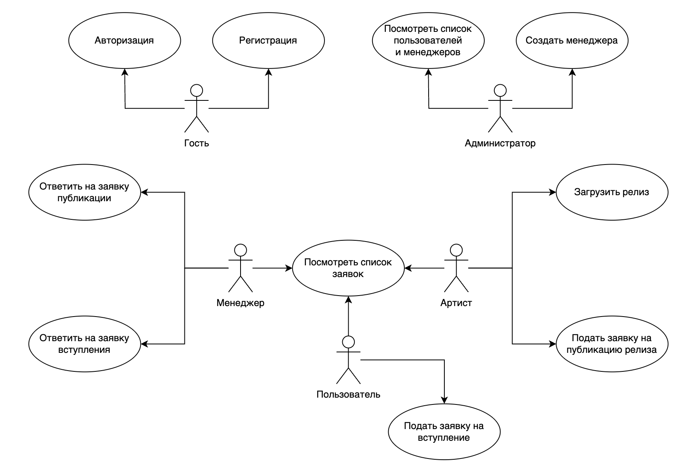
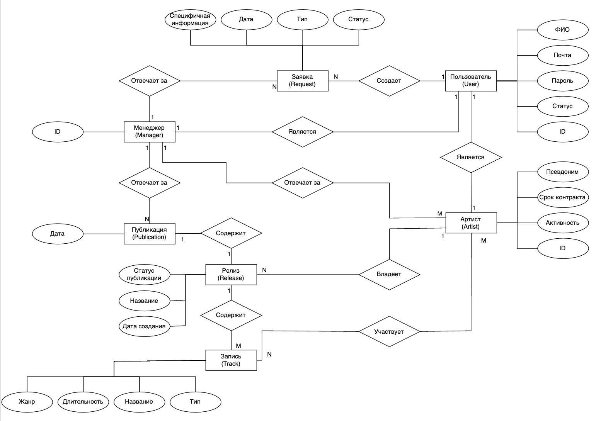
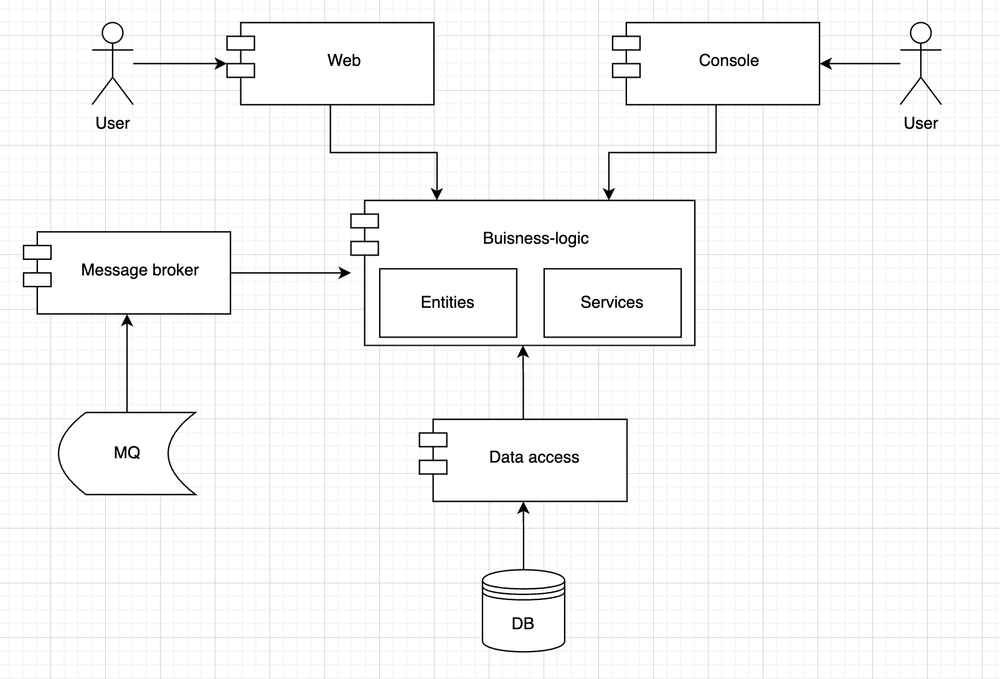
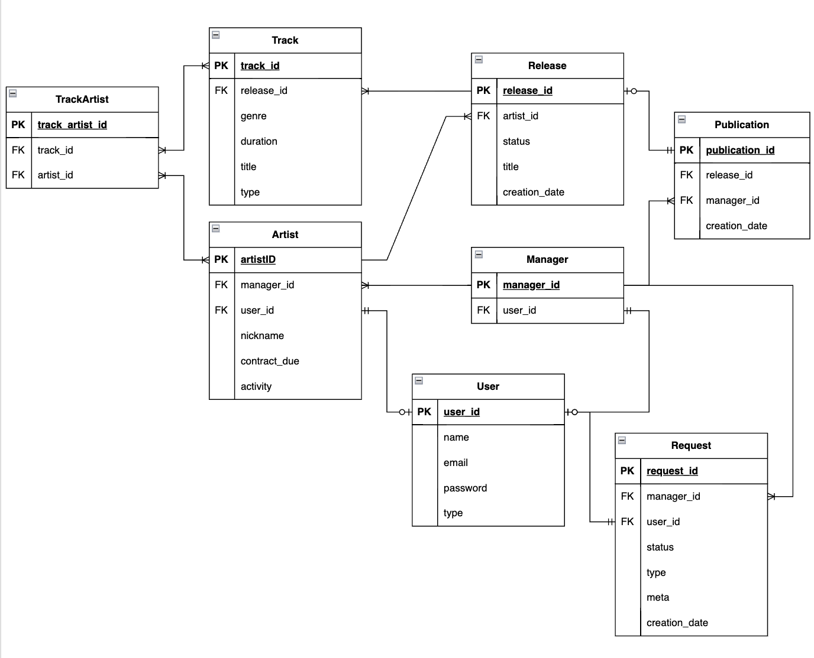

Основы разработки web-приложений
Название проекта
Cook Droogers'
Краткое описание идеи проекта
Сайт для музыкального лейбла, предназначенный для автоматизации взаимодействия менеджеров и артистов.
Предоставить артистам возможность узнать информацию о лейбле и подать заявку на вступление, его участникам - возможность опубликовать свое творчество, а менеджерам - возможность просмотреть заявки, опубликовать релиз, заняться управлением артистами.
Посредством сайта артисты смогут узнать о решениях менеджмента.
Краткое описание предметной области
Предметная область - музыкальное объединение.
Автоматизация работы бизнес-процессов лейбла на стыке артистов и менеджмента. Ключевым элементом является система заявок между членами лейбла и менеджерами.
Актуальность
Каждое музыкальное объединение (музыкальный лейбл) должно сохранять информацию о творчестве артистов, о контрактах и т.д и т.п. Артисты устали решать все вопросы по почте, а менеджеры - вручную загружать информацию в систему. Автоматизация такого бизнеса необходима.
В связи с уходом из России SonyMusic, у артистов больше не осталось возможности посредством сайта/приложения согласовывать публикации.
Описание ролей
- Гость - неавторизованный пользователь, который может лишь посмотреть (урезанную) информацию о лейбле, авторизоваться, зарегистрироваться
- Пользователь - авторизованный, может посмотреть расширенную информацию о лейбле и подать заявку о вступлении.
- Артист - принятый в лейбл пользователь, может загрузить свой релиз, подать заявку на его публикацию, имеет личного менеджера.
- Менеджер - сотрудник лейбла, курирует несколько артистов, отвечает на заявки (заявку на вступление получает случайный менеджер).
- Администратор - сотрудник лейбла, назначает менеджеров.
Use-Case диаграмма

ER диаграмма

Сложные сценарии
Подача (и обработка) заявки на публикацию релиза:
- артист заносит данные о желаемой публикации, заявка сохраняется в системе, ей задается статус "в работе" и она отображается в списке заявок артиста;
- система совершает предварительную оценку заявки:
- проверяется есть ли в этот день публикации от других артистов (запрос в базу);
- проверяется были ли публикации релизов этого артиста в последнее время (запрос в базу);
- заявка отображается в списке заявок менеджера, к которому прикреплен данный артист, показывается предварительная оценка системы;
- менеджер отклоняет заявку/принимает заявку/отменяет и назначает публикацию самостоятельно.
Пользовательские сценарии
- Гость может:
- авторизоваться (ввести логин и пароль учетной записи);
- зарегистрироваться (создать учетную запись).
- Пользователь может:
- подать заявку на вступление в лейбл;
- Артист может:
- загрузить релиз (альбом/сингл/EP/микстейп, который будет состоять из информации о релизе и содержащихся треках);
- подать заявку на публикацию релиза (выбрать свой неопубликованный релиз и желаемую дату публикации).
- Менеджер может:
- принять заявку вступления в лейбл (просмотреть заявки и принять/отклонить ее);
- принять заявку о публикации релиза (выбрать заявку и принять/отменить ее).
- Администратор может:
- посмотреть список менеджеров;
- посмотреть список пользователей;
- назначить менеджера.
BPMN-диаграмма

Описание типа приложения и выбранного технологического стека
Язык: Go (1.22)
БД: PostgreSQL
Верхнеуровневое разбиение на компоненты

Схема базы данных

Функциональные требования
Функциональные требования к страницам:
- Авторизация:
- ввод логина и пароля
- отображение лого
- Личный кабинет:
- логин
- имя
- тип учетной записи
- подача заявки на становление артистом
- Артист:
- ник менеджера
- свой ник
- срок контракта
- активность (живой/не живой, занимается ли музыкой до сих пор)
- создание релизов (релиз == 1+ треков). Релизами управляет артист, их публикацией — менеджер.
- подача заявки на публикацию релиза
- Менеджер:
- список записанных на него артистов (их имена и ники)
- входящие заявки на становление артистами (вопрос о сроке контракта)
- утверждение заявок на публикацию релизов (решение о публикации принимает менеджер)
- Админ:
- просмотр пользователей
- назначение пользователя менеджером
Подача заявок:
- Становление артистом:
- Публикация:
- указание артистом созданного релиза
- дата публикации
Создание релиза:
- указание входящих в релиз треков
- название
- дата релиза